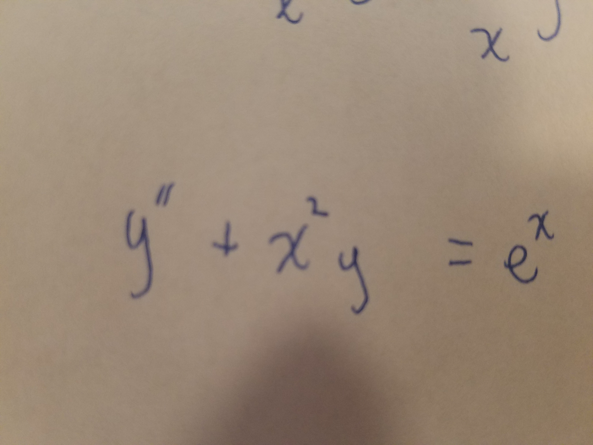

DATA SCIENCE PROJECTS

Identifying Past Heat Waves in Chicago With Machine Learning
- Several decades of daily temperature records, gridded reanalysis data, and teleconnection indices were gathered for Chicago, Illinois
- These data sources were compiled into a training matrix and days with extremely high temperatures were identified by those where maximum temperatures were above the 95th percentile.
- Given the rarity of these extreme days, SMOTE was used to synthetically increase the number of extreme heat days to balance out those that were non-heat days.
- A "pipeline" was created that validated, trained, and tested several Scikit-Learn classifiers.
- Random Forests, Logistic Regression tended to perform the most accurately.
- Link to Jupyter Notebook.
back

Classifiying HandWritten Equations Using Convolutional Neural Networks.
- Over 400 images of handwritten mathmatical equations were gathered. Equations consisted of matrices from linear algebra, and ordinary differential equations.
- The dataset was artificially augmented using Keras' image tranformations to allow for more training data to be available for the neural network.
- A small convolutional neural network (CNN) was designed and heavily regularized using Batch Normalization and Dropout layers.
- After training for 5 epochs, the network achieved 85-90% accuracy on both training and validation data.
- Link to Jupyter Notebook.
back
Identifying Ice Storms in Pennsylvania
- This project sought to identify regions afflicted by ice storms that were identified from NCEI's Storm Data Publication.
- The project utilized Shapely and Geopandas to classify NARR grid points as belonging to an ice storm region or not.
- Classifiers were trained and optimized using grid search and achieved AUC scores of 0.80-0.901 on unseen data.
- Link to Jupyter Notebook.
back